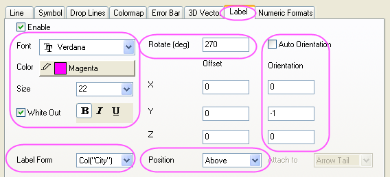

3D-Punktdiagramm mit Ankerlinien
3D-Scatter-DropLine
Dieses Diagramm besteht aus einer flachen Oberfläche und einem XYZ-Punktdiagramm mit Beschriftungen. Die US-amerikanische Karte ist eine Matrix mit 1en und 0en, die auf einer flachen Oberfläche angezeigt werden. Die Bevölkerungsdaten sind ein XYZ-Punktdiagramm mit Ankerlinien.
Origin-Version mind. erforderlich: Origin 9.0 SR0
Was Sie lernen werden
Dieses Tutorial zeigt Ihnen, wie Sie:
- eine flache Oberfläche zeichnen.
- ein 3D-Punktdiagramm in ein existierendes Diagrammfenster einfügen.
- die Beschriftungen anzeigen und benutzerdefiniert anpassen.
Schritte
Dieses Tutorial basiert auf dem Projekt: <Origin-Verzeichnis>\Samples\Tutorial Data.opj.
- Öffnen Sie Tutorial Data.opj und navigieren Sie zum Ordner 3D Surface with Droplines im Projekt Explorer (PE).
- Aktivieren Sie MBook1E und wählen Sie Zeichnen: 3D: 3D-Farbabbildung im Hauptmenü. Es wird ein Diagrammfenster erzeugt.
- Klicken Sie zum Öffnen des Dialogs Details Zeichnung doppelt auf das Diagramm. Aktivieren Sie auf der Registerkarte Oberfläche das Kontrollkästchen Flach.
- Wechseln Sie zur Registerkarte Farbplatte/Kontur und klicken Sie auf die Überschrift Füllung, um den Dialog Füllung zu öffnen. Wählen Sie in diesem Dialog die Option Beschränkte Mischung und legen Sie die Farben bei Von und Bis wie unten gezeigt fest.
- Klicken Sie auf OK, um den Dialog Füllung zu schließen.
- Klicken Sie auf Ebene, um den Dialog Ebenen festlegen aufzurufen. Legen Sie die Ebenen, wie unten gezeigt, fest.
- Klicken Sie auf OK, um den Dialog Ebenen festlegen zu schließen.
- Wechseln Sie zur Registerkarte Drahtgitter und deaktivieren Sie das Kontrollkästchen Aktivieren.
- Klicken Sie auf OK, um das Dialogfeld zu schließen. Klicken Sie im Diagrammfenster mit der rechten Maustaste auf das Layersymbol und wählen Sie Inhalt Layer im Kontextmenü, um den Dialog Layerinhalt zu öffnen. Wählen Sie in diesem Dialog die Option Arbeitsblätter im Ordner in der Auswahlliste links oben, dann die Spalte col(D) im linken Bedienfeld und 3D-Punkt-/Ankerlinien-/Vektor als Diagrammtyp. Aktivieren Sie dann das Kontrollkästchen Neuskalieren bei Anwenden und klicken Sie auf den Pfeil, um col(D) zum rechten Bedienfeld als ein 3D-Punktdiagramm hinzuzufügen.
- Klicken Sie auf OK, um den Dialog Layerinhalt zu schließen. Die Bevölkerungsdaten werden dem Diagramm, wie unten zu sehen, hinzugefügt.
- Klicken Sie zum Öffnen des Dialogs Details Zeichnung doppelt auf das 3D-Punktdiagramm. Wechseln Sie zur Registerkarte Symbol, setzen Sie die Größe auf 18 und setzen Sie die Farbe auf Farbabbildung definiert durch col(Population).
- Wechseln Sie zur Registerkarte Farbplatte und klicken Sie auf die Überschrift Ebene, um den Dialog Ebenen festlegen zu öffnen. Legen Sie die Ebenen, wie unten gezeigt, fest.
- Bestätigen Sie mit OK, um den Dialog Ebenen festlegen zu schließen. Klicken Sie auf die Überschrift Füllung, um den Dialog Füllung zu öffnen. Wählen Sie im Dialog Füllung die Option Palette laden und klicken Sie dann auf die Schaltfläche Palette auswählen, um die Palette Watermelon auszuwählen. Klicken Sie auf OK, um den Dialog Füllung zu schließen.
- Wechseln Sie zur Registerkarte Beschriftung und wenden Sie die unten angegebenen Einstellungen an.
- 
- Wählen Sie Layer1 im linken Bedienfeld und wechseln Sie dann die Registerkarte Größe und Performance im rechten Bedienfeld. Deaktivieren Sie die Kontrollkästchen unter Entwurfsmodus, Punkte wenn nötig auslassen.
- Wählen Sie die Ebene Graph im linken Bedienfeld und wechseln Sie dann zur Registerkarte Anzeige. Setzen Sie die Farbe auf Hellgrau.
- Bestätigen Sie mit OK, um den Dialog Details Zeichnung zu schließen. Das erzeugte Diagramm sollte am Ende folgendermaßen aussehen.